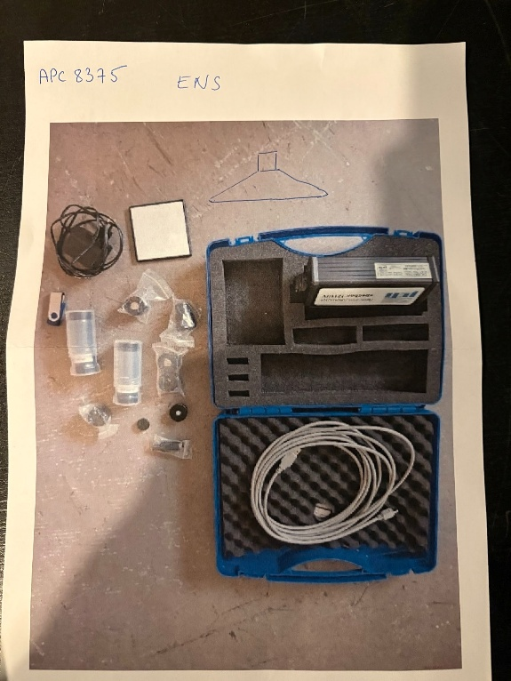
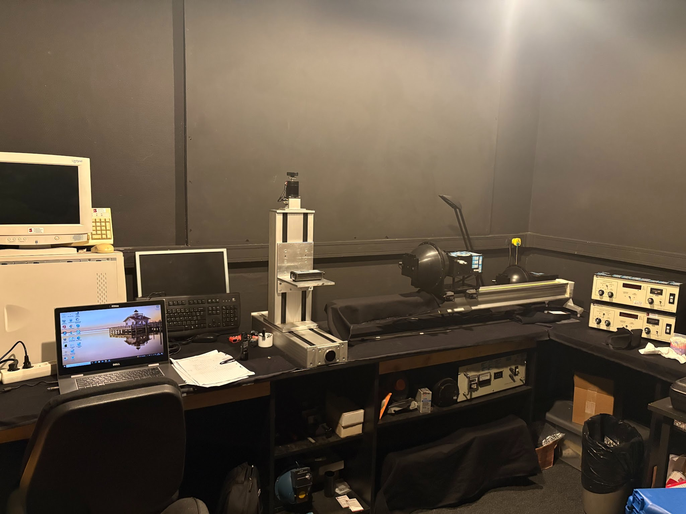
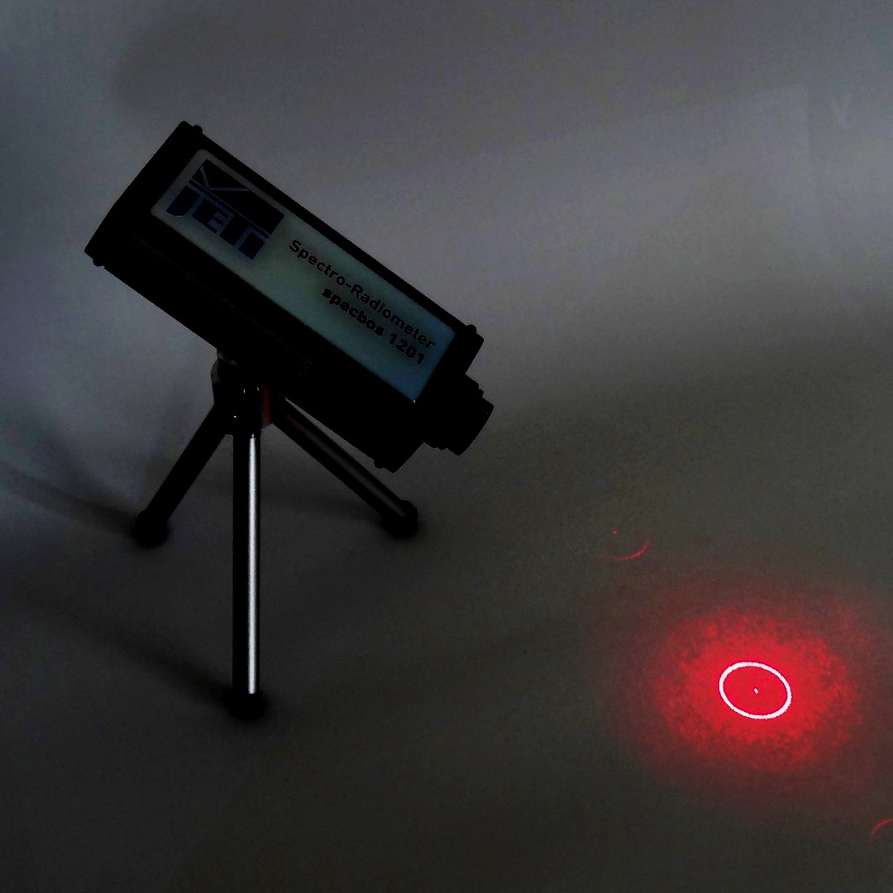
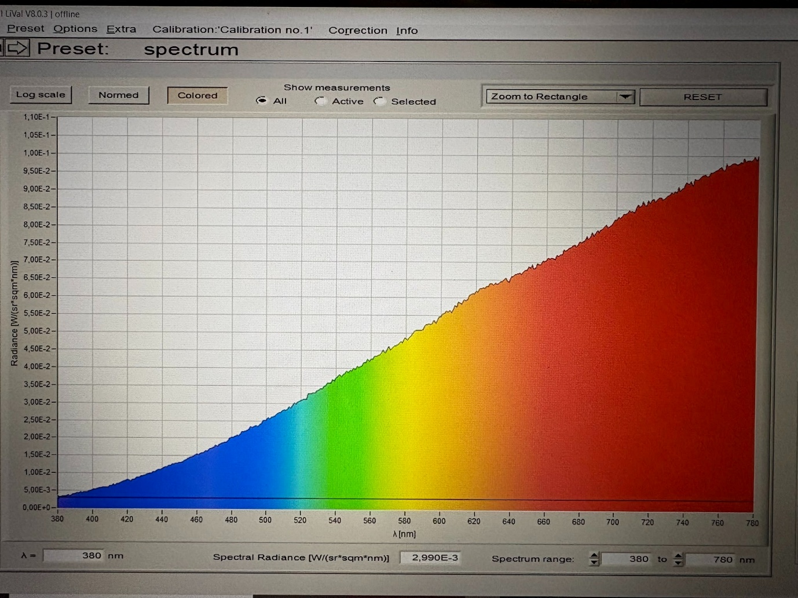
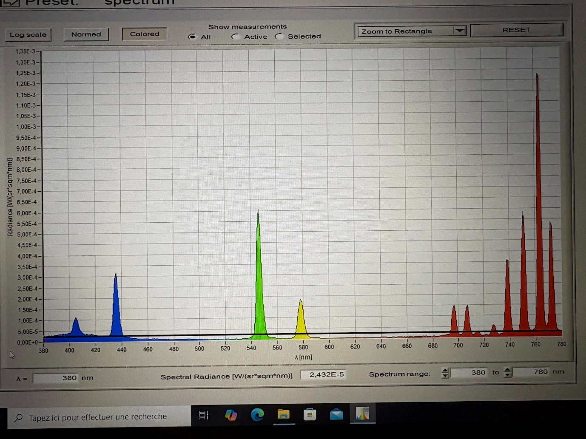
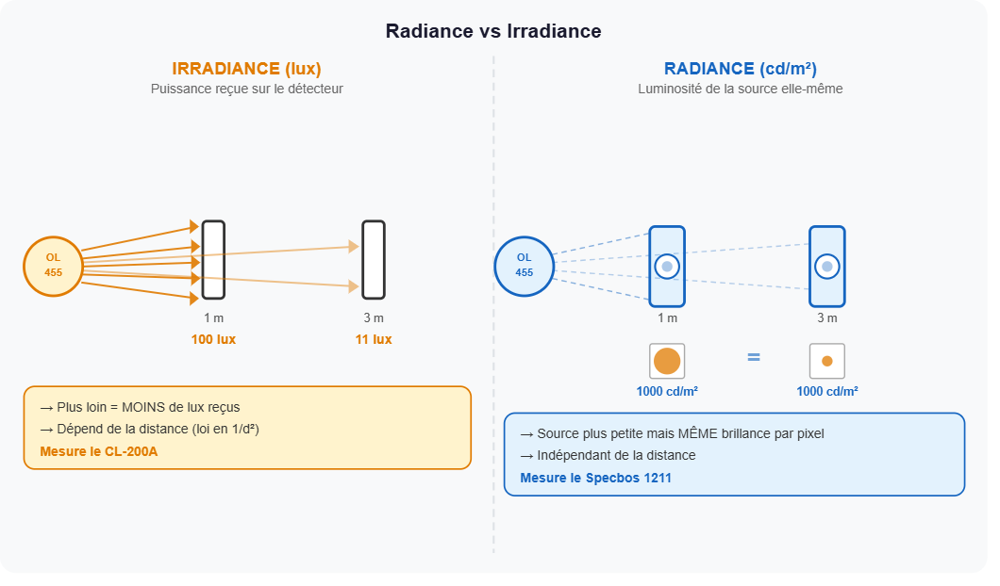
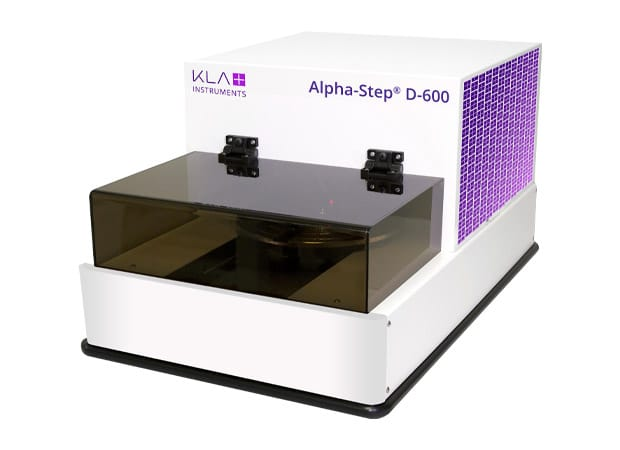
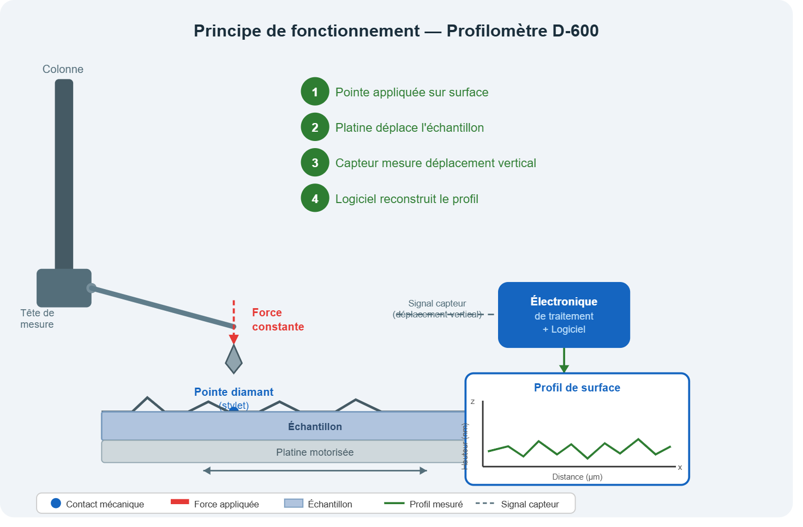
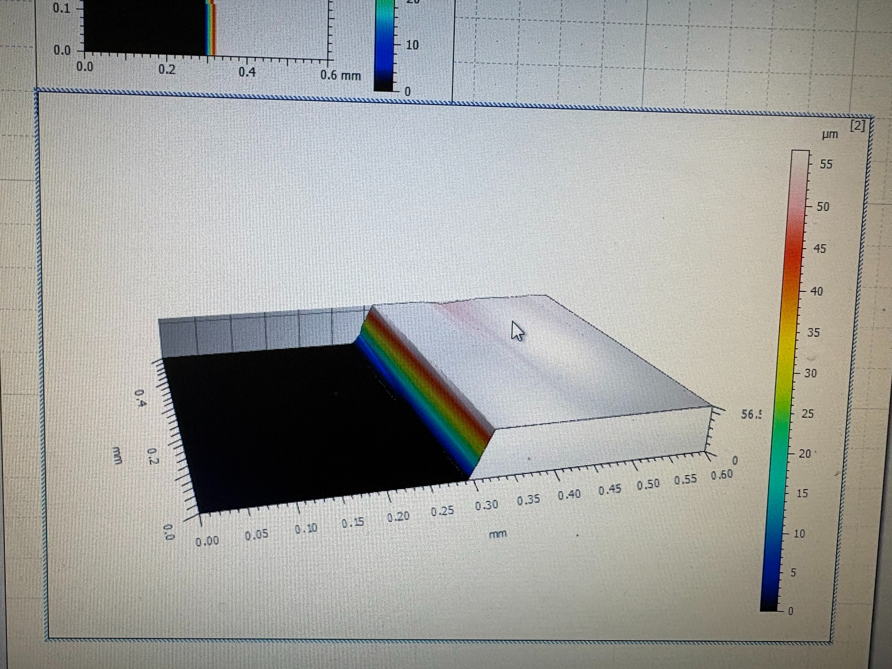

Réception & logistique SAV

Kit JETI Specbos à la réception
Ouverture du colis APC 8375 – vérification du contenu (valise, câble USB, accessoires) et inventaire à l'arrivée

Vue d'ensemble du banc optique
Salle noire dédiée aux mesures et calibrages photométriques, avec colonne verticale, source OL-455 et PC de mesure
Appareils – Spectroradiométrie

Spectroradiomètre JETI Specbos 1201
Appareil pointé sur la source lumineuse – viseur laser rouge permet d'aligner précisément la zone de mesure

Spectre de radiance – mode coloré (Lival)
Mesure de la radiance spectrale (380–780 nm) d'une source halogène via le logiciel Lival, après calibrage

Spectre d'une lampe à vapeur de mercure
Raies caractéristiques du mercure (436, 546, 579 nm…) utilisées pour valider la justesse de l'étalonnage spectral
Calibrage & Profilométrie

Radiance vs Irradiance
Schéma explicatif des deux grandeurs mesurées : l'éclairement (lux, CL-200A) dépend de la distance, la luminance (cd/m², Specbos 1211) en est indépendante

Profilomètre Alpha-Step D-600 (KLA Instruments)
Appareil utilisé pour mesurer les profils de surface par contact mécanique – résolution verticale à l'échelle du nanomètre

Principe de fonctionnement – Profilomètre D-600
La pointe diamant parcourt l'échantillon à force constante, le capteur mesure le déplacement vertical et le logiciel reconstruit le profil de surface

Profil de surface en 3D
Reconstruction 3D du profil d'une marche – hauteur mesurée à 7,9947 µm